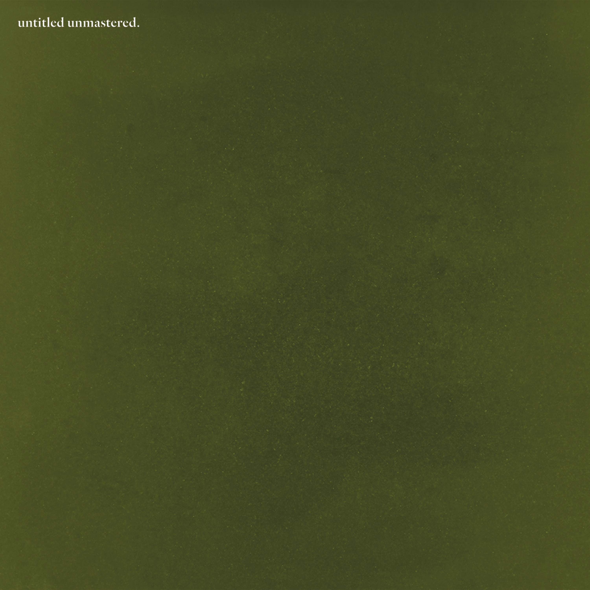

Kendrick Lamar
Kendrick Lamar (nacido el 17 de junio de 1987 en Compton, California , EE. UU.) es un rapero estadounidense que ha alcanzado éxito crítico y comercial con álbumes como good kid, mAAd city (2012) y To Pimp a Butterfly (2015) y sencillos como "Not Like Us" (2024).
Vida temprana y carrera
Kendrick Lamar Duckworth creció en una zona de alta criminalidad de Compton , California, adonde sus padres se mudaron para escapar de la violencia en Chicago . Empezó a escribir rimas en su adolescencia y lanzó su primer mixtape, " Youngest Head Nigga in Charge" (2003), bajo el nombre de K. Dot. La música impresionó a Anthony Tiffith, director del recién formado sello discográfico Top Dawg Entertainment, quien lo contrató. Duckworth publicó dos mixtapes más como K. Dot: Training Day (2005) y C4 (2009), antes de lanzar Overly Dedicated (2010) como Kendrick Lamar. Se convirtió en un artista invitado popular en temas de otros raperos y también se unió a otros artistas de Top Dawg, Ab-Soul, Jay Rock y ScHoolboy Q, en un colectivo de hip-hop conocido como Black Hippy.En 2011, Top Dawg puso a disposición el álbum Section.80 de Lamar en iTunes , y en un concierto ese mismo año, Lamar fue declarado ceremonialmente el "nuevo rey de la Costa Oeste" por los veteranos artistas de rap Game, Snoop Dogg y Dr. Dre .
Good boy, mAAd city y To Pimp a Butterfly
En 2012, Lamar firmó con el sello de Dr. Dre, Aftermath Entertainment, y lanzó su primer LP,Buen chico, mAAd city ; debutó en el número dos de la lista Billboard 200 e incluyó los éxitos de R&B/hip-hop "Swimming Pools (Drank)" y "Poetic Justice". La crítica lo consideró un álbum conceptual con una narrativa autobiográfica. Lamar fue nominado a siete premios Grammy en 2013 , incluyendo mejor álbum y mejor artista nuevo, pero no ganó. Al año siguiente, sin embargo, su sencillo "i" se alzó con los premios a mejor canción de rap y mejor interpretación de rap. En 2015, Lamar lanzóTo Pimp a Butterfly , que fue un gran éxito. El álbum rompió un récord de Spotify , con más de 9,6 millones de reproducciones en streaming, una semana después de su lanzamiento, y el presidente estadounidense Barack Obama declaró que el sencillo «How Much a Dollar Cost» era su canción favorita de 2015. Al año siguiente, Lamar recibió 11 nominaciones al Grammy , y ganó los premios a la mejor interpretación de rap y a la mejor canción de rap (ambas por «Alright»), a la mejor colaboración rap/cantada (por «These Walls»), al mejor vídeo musical (por «Bad Blood») y al mejor álbum de rap (por To Pimp a Butterfly ). También animó la ceremonia con una vívida interpretación de «The Blacker the Berry».| Concepto | Album |
|---|---|
|
Un proyecto misterioso y alternativo atribuido a Kendrick Lamar, conocido por su enfoque introspectivo, atmosférico y experimental. Explora la espiritualidad, los conflictos internos y el aislamiento personal a través de sonidos lo-fi y letras crípticas, creando una experiencia artística única que se aleja del mainstream para sumergirse en lo abstracto. |

|
| GNX | |
|
Este álbum doble es una introspección profunda sobre la salud mental, la paternidad, el abuso generacional y el proceso de sanación. Kendrick se muestra vulnerable, cuestionando sus decisiones y el peso de su fama, en una obra fragmentada pero honesta que mezcla terapia personal con crítica social y confesiones íntimas. |

|
| Mr. Morale & the Big Steppers | |
|
Una narrativa dividida entre el destino y la elección, lo divino y lo humano. Con una estructura más comercial pero igual de lírica, Kendrick analiza el ego, el miedo, la lealtad y el arrepentimiento. Es un álbum personal que enfrenta contradicciones morales, espirituales y sociales con beats agresivos y producción pulida. |

|
| DAMN. | |
|
Una colección de grabaciones sin título que revela el proceso creativo de Kendrick durante la era To Pimp a Butterfly. Cada pista es cruda, improvisada y rica en contenido político y espiritual, con una fusión libre de jazz, funk y rap que mantiene una energía espontánea y experimental. |

|
| untitled unmastered. | |
|
Una obra maestra conceptual que combina jazz, funk, soul y rap para denunciar el racismo sistémico, la brutalidad policial y la lucha interna del artista negro. Kendrick explora su identidad, comunidad y fama en un viaje emocional, lírico y musicalmente complejo, convirtiéndose en un hito cultural contemporáneo. |
|
| To Pimp A Butterfly |